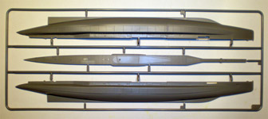

|

1/350 Hobbyboss underwater cruiser "Surcouf"
Kit #83522
MSRP $27.99 $25.19 from Squadron
Images and text Copyright © 2013 by Matt Swan
Developmental Background
The Surcouf was a French submarine order in 1927, built in 1929, commissioned in 1934 and sunk in 1942 - pretty short life for a somewhat unusual boat. The Washington Naval Treaty put in place after the First World War placed several strict limitations on naval vessel but omitted restrictions on submarines, most likely because the drafters failed to conceive of submarines as any serious kind of naval threat. The French took advantage of this omission ordering three corsair class submarines that were designed more as underwater cruisers then the conventional submarine we think of today. The Surcouf had many interesting features such as a selection of 16 inch and 22 inch torpedoes and dual anti-aircraft guns but most interesting was the twin 8 inch guns mounted in a water tight turret on the deck and a scout seaplane housed in a hanger tube inside the conning tower. The main guns could be brought into action within three minutes of surfacing and depending on the means of gun control (conning tower sights, periscope or scout plane) had a very impressive firing range. At the time she was commissioned the Surcouf was the largest submarine ever built and held that title until the Japanese I-400 was built.
As cool as all the specifications sound this boat had her share of problems such as: a very slow dive rate making her susceptible to aerial bombardment and a serious roll issue whenever those main guns were fired. The Surcouf sailed for the Free French Navy during the war and in 1942 was sent to the Portsmouth Shipyard in the United States for refit (a very unusual fact in itself). When she left there things became somewhat confused and difficult to ascertain but it appears she sailed south along the U.S. coast line and somewhere in the vicinity of the Bermuda Triangle was struck by a freighter during the night. Some feel she may have sunk right there while others feel only her radio equipment was damaged beyond repair and that she continued on sailing for the Panama Canal. Around that time period an Allied B-24 reported attacking and sinking a large unidentified submarine in the area just outside the Panama Canal. As no other shipping losses were reported in that area during that time period by either the Allies or the Axis it could be supposed that this was the Surcouf and that she met her end right there. Either way somewhere between the Bermuda Triangle and the Panama Canal this unusual French submersible met her end.
The Kit
This is really a pretty simple kit without a high parts count. The full hull is nicely done with finely recessed panel lines combined with raised lines on the main hull and all the major exterior details are there. A couple of important details are lacking or so understated as to be a problem. The chambers for the torpedoes are not well represented and the main turret is molded in place with the conning tower. I think it would have been much better to make the turret a separate piece that could rotate or at least make the definition between the tower and the turret a little more prominent. If one did not know that the turret should rotate one would never guess it from looking at the model. The conning tower and mast arrangements are all to represent the later version of the boat. The kit comes with a full hull and a single sprue of light grey plastic parts for all the exterior details. A small photo etched fret covers all the various railings and conning tower ladder. An interesting side note on the PE details, each side of the fret is sealed with an adhesive clear coating that protects the delicate etchings from damage and corrosion. It takes a little effort to peel it back but the ability to protect the parts is undeniable. When removing the parts from the frets I found the connections to be exceptionally thin and easy to slice with a fresh razor knife. We also get a small sprue of clear parts that will product two Besson MN 411 floatplanes.

You may click on these small images to view larger pictures
Decals and Instructions
Kit instructions consist of a simple single sheet A4 fold out with basic safety instructions, a parts map and two pages of assembly instructions. No construction tips are provided at all so think carefully before gluing. Also we get a single full color page with a three view on one late model paint scheme, namely the red hull with light grey/dark grey uppers and painting instructions for the float planes. Decals are brief with two flag options for the sub and two color options for the conning tower marking. We also get basic markings for the two float planes. If you want to build anything other than the basic late model kit you're going to have to do some internet searching and, depending on early or late model, some small amount of modification.
Construction
Before gluing any pieces together I wanted to settle on a paint scheme. The kit painting selections are all about red hulled schemes with solid or with alternating gray uppers. Ultimately this kit is going to be displayed on top of my 150 gallon aquarium which already has a couple of ships with similar WW2 schemes and I wanted something a little different. When the Surcouf was originally launched she was done in Prussian blue with light gray uppers and some dazzle like pattern on the conning tower. I found some digital artwork of the sub in this scheme with a natural wood deck and black railings - this looked pretty cool to me. While it may not hold up to any historical analysis I liked it and decided to go with it. Now I can start building.
I'm approaching this as two primary sub-assemblies, the conning tower and the main hull. The forward area of the conning tower is a gun turret that would rotate during battle, in the first image the white arrow indicates where the turret separates from the tower during rotation. The problem here is the recessed line is so fine it is easily overlooked. I accentuated this line by drawing my razor saw across it a couple times making it stand out a little better. Once the conning tower pieces were assembled and cleaned up I did the paint scheme. I quickly realized that I should have waited to put the PE piece on until the primary paint job was complete, will not make that mistake on the hull. The wood grained deck is created by painting the surface light tan then mixing some artist's oil burnt umber and sienna with some rapid dryer then brushed across the surface with a stiff wide brush. I'll use the same technique on the main deck as well. My AMS (Advanced Modeler Syndrome) kicked in so I added a couple of antenna wings on top of the tower, these will anchor some lines running aft later in the build and are made from some scrap wire found on the modeling desk.
The primary hull pieces are glued together and seams are cleaned up. When adding the other plastic details I ran into some trouble with the propeller drive shafts. These things just wanted to warp something terrible when I cut them free of the plastic tree so I replaced mine with some stock Evergreen plastic rod. On the deck I added a couple of extra details like the forward mast from wire and the antenna hanger on the aft deck also made from wire. So now all the plastic pieces are on the hull and I have to stop and think for a moment. Just how am I going to hold this thing while painting and not get any fingerprints all over it? I'm good for doing that which is why I stopped for a moment. Ultimately I took a couple of bamboo skewers, drilled a couple holes into the deck surface where the conning tower would cover them and by angling them and super gluing the ends together created a very secure handle. Once the paint was done a quick twist over the glue joint with a small pair of pliers broke them apart and they came right out! The wooden deck is brush painted like the conning tower decks were and the two main sub-assemblies came together.
Taking my lesson on painting and attaching my PE last I break out the flat black in the airbrush and shoot all the railings on the fret. I spent a couple hours with my Omni-Visor getting all these little buggers glued in place then brush painted the hatches and tie downs black. Lastly the decal French flag went on the mast and a couple of decals went onto the conning tower walls. The entire model was treated with Micro-Flat. The base was painted with a metal flake black and the name plate was done with Alclad prismatic scarabeus green to blue over flat black. Once that was set and dry it was wet sanded to bring out the lettering then super-glued to the base. A few pieces of invisible thread run over a black marker made my antenna lines and she was ready for the aquarium.

Just for a size reference here is the completed model in front of the 1/350 Japanese destroyer Kagero.
|


{kind=link}
{kind=link}
{kind=link}
{kind=link}
{kind=link}
{kind=link}
{kind=link}
{kind=link}
{kind=link}
{kind=link}
{kind=link}
{kind=link}
{kind=link}